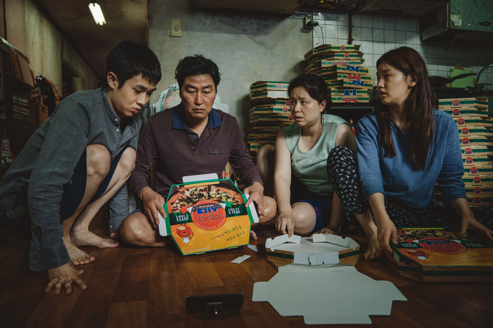

I set my alarm for 2:30 in the morning. I wasn’t rushing to the airport or commuting to some faraway job. I was a 43-year-old man trying to watch a K-pop concert live on my phone.
The June 13 show marked the eighth anniversary of the wildly popular band BTS. And, like any superfan, I’d hoped to see them perform in person, but their planned world tour was postponed in the wake of COVID-19. So here I was, up in the middle of the night, desperately trying to remember my password to a South Korean social media platform called Weverse.
It wasn’t supposed to be this way. South Korean officials had been expecting some 20 million visitors in 2020, up from a record high of 17.5 million the year before—a rush of foreigners no doubt lured in by the stunning rise of Korean culture on the world stage across the last decade.
The moment was undeniable. BTS was the first group since The Beatles to land three number-one albums on the Billboard 200 chart in a single calendar year. Then Bong Joon Ho’s Parasite stormed the Cannes Film Festival (before winning Best Picture at the Oscars in 2020). U.S. retailers such as Target had been selling Korean face masks next to copies of People magazine for years. And a mouthwatering episode of the Netflix docuseries Chef’s Table turned a 60-year-old Buddhist monk named Jeong Kwan into South Korea’s most unlikely breakout star.
| BTS performing on KBS "Music Bank" (Source: HYBE Labels) |
A country of 51 million people had somehow seized the global spotlight, dictating what people around the world were playing in their earbuds and watching on their screens. (If you were one of the 296.5 million people around the world who bought a Samsung phone in 2019, they also built that screen.)
The media had long ago identified this trend, dubbed hallyu, or the Korean Wave. And there was proof that hallyu had been doing for South Korean tourism what Lord of the Rings had done for New Zealand. According to a study by the Hyundai Research Institute, 10.41 million people visited South Korea in 2017. Of those, 7.6 percent cited BTS as the primary reason.
But as the pandemic closed borders and canceled events, tourism fell to a 32-year low of just 2.5 million people. Now even 2021 appears to be a wash. South Korea may be cautiously opening up to international visitors (with a mandatory 14-day quarantine for most tourists, at press time), but K-pop bands like MonstaX and BTS have delayed even their local shows.
As I sat up in bed in June watching BTS’s tight choreography along with more than a million fans from more than 190 countries, I realized a more surprising story had emerged: Even COVID-19 couldn’t stop K-pop.
Catch the Korean wave
During quarantine, the Korean wave became a tsunami—notably in the West. After George Floyd’s death in May of 2020, BTS and its management donated $1 million to the Black Lives Matter movement, only to watch the band’s legion of fans—known as ARMY, or Adorable Representative M.C. for Youth—match that donation in just 25 hours. Kathryn Lofton, a professor at Yale University, likened BTS to a “religion project,” due to the community’s devotion.
A year later, McDonald’s—the biggest fast-food chain in the world—teamed up with the biggest band on the planet for the limited-edition BTS Meal. It was the restaurant’s first-ever global celebrity collaboration, available in 49 markets including Colombia and Lithuania, and it was almost too successful.
Meanwhile, those online concerts? BTS did a string of them, raking in so much money that Rolling Stone magazine declared they’d changed the music industry forever: “BTS just proved that paid livestreaming is here to stay.”
| Blackpink performing at Coachella in 2019 (Source: YG Entertainment) |
During lockdown, Netflix premiered a documentary about the all-female group Blackpink, charting the band’s rise from obscurity to a 2019 performance at Coachella in front of more than 100,000 fans. I didn’t have to set an alarm for that one; it was streaming at my leisure.
And I was the perfect audience. Shortly before COVID-19 hit, I’d flown to Seoul, where I took a K-pop dance class for tourists, learning the steps to Blackpink’s “Ddu-Du Ddu-Du,” complete with finger-guns. The $50 class, held at a glass-box studio called Fanxy, advertised on TripAdvisor and Airbnb. (If you want to try it out for yourself, they pivoted online during the pandemic.) Perhaps one day I’ll find the courage to post the music video we shot in class.
MGM, the company behind reality TV hits like The Voice, Survivor, and Shark Tank, recently announced plans for a new reality show, where U.S.-based singers (aged 13 to 25) would fly to Seoul to train at a K-pop boot camp run by SM Entertainment (the label behind massive acts like NCT) while competing to form a new boy band. Not to be outdone, Universal Music Group and HYBE (formerly Big Hit Entertainment, the company behind BTS) are also working on a competition show.
As quarantine stretched on, everyone in America—from Oprah to BuzzFeed—suddenly seemed to be discovering K-dramas on Netflix. Though the streaming company is famously tight-lipped when it comes to viewership data, the proof is in the pajeon: In 2021 they announced plans to invest close to $500 million in South Korean programming.
Meanwhile, two of the highest-rated shows on U.S. television—Fox’s The Masked Singer and CBS’s The Good Doctor—were based on Korean TV shows. That’s pretty wild, considering South Korea had just two broadcast TV networks in 1987. Says Jung-Bong Choi, a visiting professor at Yonsei Graduate School of Communication: “There’s no historical precedent where this developing country made a sprint into the global cultural landscape.”
From ‘vassal state’ to ‘Korean Cool’
To understand the significance of this moment—and how surreal it may feel for so many South Koreans to have the world suddenly at their doorstep—one has to look at the country’s history. Korea had been a “vassal state,” Choi told me, ruled in part by China, then occupied by the Japanese from the early 20th century through the second World War.
Japanese propaganda flooded the country, pushing the idea that Koreans were somehow less than, and it left a mark. Euny Hong, in a book titled The Birth of Korean Cool, called it the “Cabbage Inferiority Complex,” referring to the pungent aroma of kimchi spilling out of family kitchens.
When democracy came in 1948, South Korea remade itself from a poor colony to a manufacturing hub—and the work was all-consuming. As Kunwoo Kang, co-founder of an art gallery called Punto Blu in Seoul, told me: “If I go to my dad and ask him, ‘What’s Korean culture?’ he would struggle to give me an answer. He was running factories that manufactured tents and bags. He wasn’t thinking about anything else.”
The country was sprinting toward a new future. When the financial crisis tore through Asia in the late ’90s, South Korea was forced to take a massive $58 billion loan from the International Monetary Fund—the largest in history, at the time—and paying it back became a national point of pride, with the government encouraging its citizens to donate their own household gold to the cause.
“He wanted to show the world that culture could come first and then economy would follow.” - Chris Lee, SM USA
It was around this time that the South Korean government started investing in the arts as a form of “soft power,” capable of changing the country’s image from that of an industrial nation to a global, creative capital. They poured money into film and TV production, nurturing groundbreaking local talent such as filmmakers Bong Joon Ho and Park Chan-wook.
SM Entertainment chairman Lee Soo-man launched his namesake firm in 1995, believing K-pop’s positive—if sanitized—music would connect with teenagers (and their parents). “He wanted to show the world that culture could come first and then economy would follow,” says Chris Lee, the head of SM USA.
Both bets paid off. Demand for homegrown content exploded. And then spread abroad. The media dubbed this Hallyu 2.0.
Suddenly K-pop was featuring in geopolitics. When the U.S. announced plans to install a missile defense system in South Korea in 2016, China retaliated by canceling K-pop concerts and cracking down on tourist visas. But the movement was unstoppable. Young North Koreans increasingly enjoy K-pop and K-dramas that have been smuggled into the country on flash drives from China, leading dictator Kim Jong-un to decry the music as a “vicious cancer.”
| Film poster of movie "Parasite" (Source: IMDb) |
If Psy’s inescapable 2012 anthem “Gangnam Style”—one of the first videos to ever reach one billion views on YouTube—was the industry’s coming-out party on Western shores, Parasite’s historic Best Picture win at the Oscars created a halo effect on all cultural exports. In the U.S., Fox is developing a cop series called Live (based on a Korean format), while Kevin Hart is developing a remake of the local blockbuster Extreme Job. In 2021, Minari star Yuh-Jung Youn became the first Korean actor to win an Academy Award.
And BTS would continue to break records. Their single “Butter” dropped in May and became the fastest YouTube video ever to reach 10 million views. The song was streamed 20.9 million times on Spotify in its first 24 hours—the most single-day streams of any song ever on the service.
The transformation was complete. Gangnam was farmland 40 years ago. Now it’s home to a Cartier flagship store.
“I think Korea, as a whole, symbolizes how a country could grow in 50 years if you nurture it well.” - Andrew Park, Yodatrip
| Fans holding banners in a K-Pop concert (Source: Google Images) |
The cost of success
“I think what K-pop did for Korea is that it’s changed the way Koreans perceive themselves,” Park says.
That’s Andrew Park speaking. He runs Yodatrip, a Seoul-based startup that was making hip audio guides for tourists before pivoting to an AI-powered concierge service for local travelers in the wake of COVID-19. We’d first met in a Seoul pojangmacha—a type of streetside pub popular for drinking soju—to talk K-culture. He seemed surprised by my interest, saying: “The funny thing about Korea is that people [only] realize how we are through the lens of foreign media.”
Here we were a year later catching up by Zoom—a year in which the entire world was celebrating South Korea, not just for its cinema, inescapable pop music, and its innovative skincare products, but for its expert handling of the coronavirus. (At press time, South Korea reported 2,033 deaths.) A headline in The Atlantic summed it up best: “What’s South Korea’s COVID secret?”
“I think Korea, as a whole, symbolizes how a country could grow in 50 years if you nurture it well,” Park says, though he also points out: “It’s not always rainbows and butterflies.”
| Fans mourn as K-Pop star Goo Hara's memorial takes place (Source: AP) |
When we’d met, a rash of suicides had recently rocked the K-pop community. Sulli, of the group f(x), who’d been cyberbullied for (among other things) carrying a cell phone case that read “Girls can do anything,” took her own life in October of 2019. Six weeks later, the artist Goo Hara took her own life, after rumors of a sex tape surfaced.
Some blamed these deaths on the high beauty standards to which these idols are held. A simple Google search on plastic surgery in K-pop turned up tales of “V-line surgery,” where the jawline is broken and shaved down to create an elfin-like face. The procedure is painful and it can take six months for the swelling to go down.
It’s not just a K-pop story. In Seoul, where job applicants are sometimes required to submit headshots, one in five South Korean women has had some form of cosmetic surgery; in the States, that number is just 1 in 20. On Korean Airlines, makeup training is mandatory even for male flight attendants.
In the wake of these tragedies, South Korean president Moon Jae-in called for stronger punishments for online trolls. One of the popular web portals, Daum, disabled comments beneath entertainment news stories.
For young people in South Korea, suicide is among the leading causes of death. The pandemic threatened to exacerbate these problems, as a new generation faced with job insecurity and falling wages reported being treated for depression in record numbers.
Thankfully, people are finally starting to talk openly about mental illness—driven in part by the very K-pop stars whose record labels once discouraged them from broaching anything even remotely controversial. In a May 2021 interview with Rolling Stone, BTS’s Suga opened up about his own struggles with depression, which he’d been writing about in his lyrics as far back as his 2016 debut mixtape.
When asked how he was feeling lately, he said, “Iʼm comfortable now and feeling good, but those sorts of negative emotions come and go … almost like cold weather. I think, for anybody, these emotions are not something that needs to be hidden. They need to be discussed and expressed.”
When I saw Suga thriving on that livestream concert I watched in the middle of the night, it gave me hope. Or maybe—as the kids say—I felt seen. It’s perhaps why K-pop is flourishing despite the pandemic, or maybe because of it.
As we struggle to readjust to the reopening world and emerge from our isolation, BTS offers a message that says “you’re not alone.” Just listen to the group rap on “Butter,” their get-on-the-dance-floor song of the summer: “All the playas get movin’ when the bass low. Got ARMY right behind us when we say so … Let’s go!”